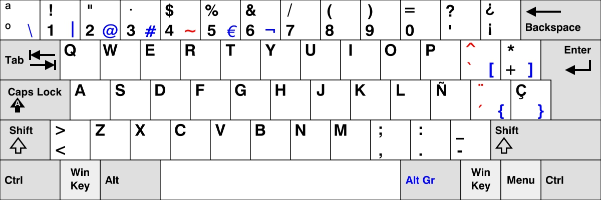
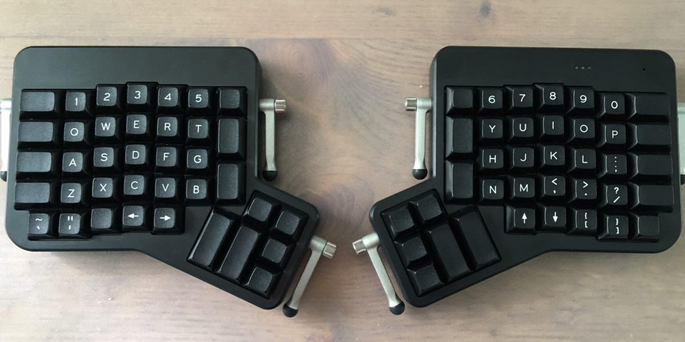
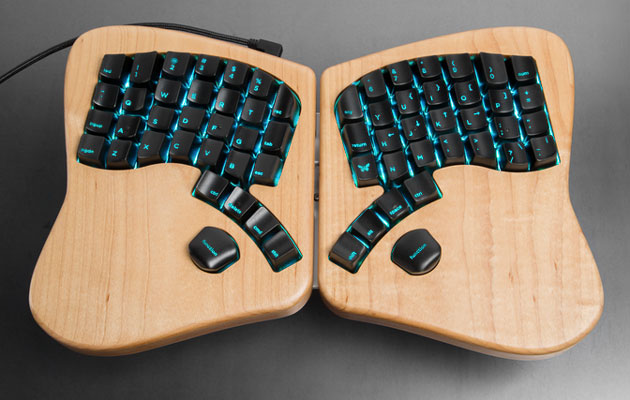

Dvorak, one year later
Bonjour à tous, aujourd'hui je vais vous faire un retour d'expérience
sur l'apprentissage d'un layout de clavier

Spanish QWERTY
US QWERTY

regarde qwerty americain
mieux pour coder
pas d'accents
35 WPM
qqchose ne va pas
RSI(Repetitive Strain Injuries)
ETQDev cela me préocupe car mes mains
sont mon outil le plus important
consequences tres graves
mais +sieurs facons d'y remedier
Touch typing
1888 Frank Edward McGurrin
Christopher Latham Sholes
1873: QWERTY
1930: dvorak
Pour l'anglais
August Dvorak
1932: Simplified Dvorak
apres 1936 etudes biaises -> myth + rapide
Simplified Dvorak

optimisé la fréquence de tape sur la home row
minimum sur low row
Ergonomic Keyboard
Ergonomic Keyboard
Mechanical keyboards
Mechanichal switches


le feedback est ++ qu'un clavier de membrane
plus facile de savoir combien de force appliquer
- 🚑 Reduce RSI risk
- 🐎 Improve my WPM
- ⌨️ Type more!
Use a Typing Tutor
- 📅 Everyday
- 🙈 Don't look at your fingers
- 💯 Avoid mistakes
moins d'erreur car memoire motrice
Programmer Dvorak

je dev, donc mieux pour moi ce clavier
My experience
- 📄 Printed the layout
- 📖 Learnt in 1 month
- 📈 WPM x2 2 months later
- 😎 Still improving today
grace au touch typing j'avais la meme vitess
a peu pres 1 mois et 1 semaine apres
il y a dautres. Parmis eux, colemak
😄 Happy with it
Colemak

Temps apprentissage plus court
🙏 Touch typing is a must
en tout cas je conseille absolument d'apprendre
le touch typing